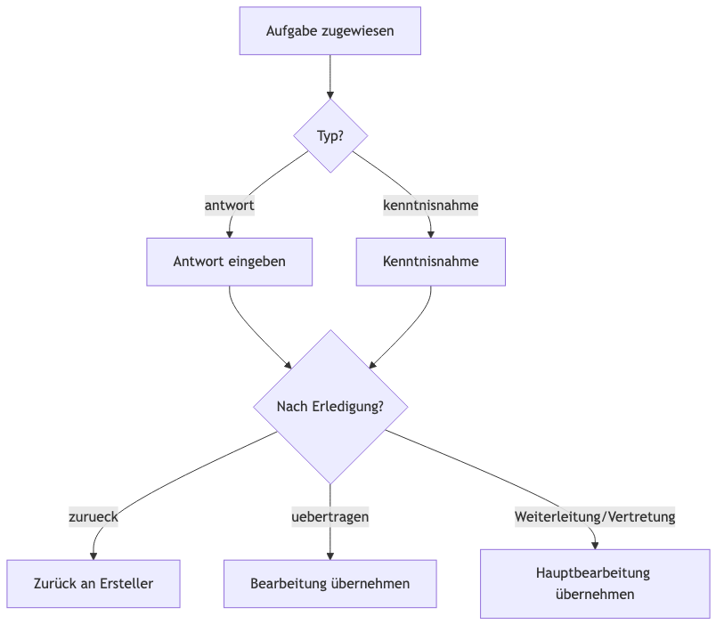
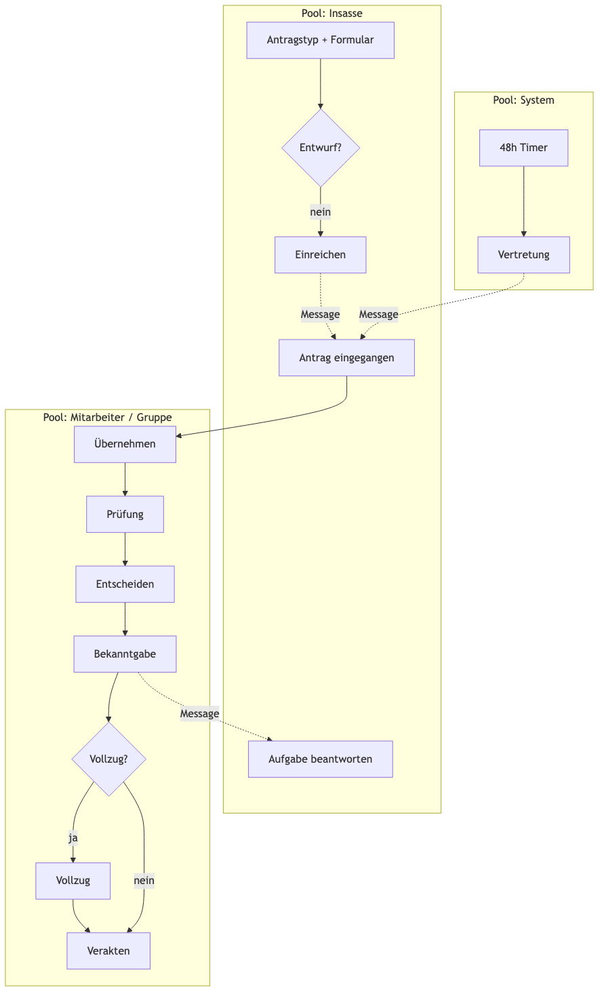

Lastenheft — Prototyp Justizvollzugsplattform (Antragswesen)
Stand: Juni 2026 Version: 1.1 (Prototyp) Basis: Implementierung in public/ (Insassen-, Mitarbeiter-, Admin-Portal), server.js, data-sync.js Zweck: Vollständige Erfassung aller im Prototyp umgesetzten Anforderungen als Grundlage für Produktentwicklung, Ausschreibung oder Priorisierung. Jede Anforderung enthält bis zu drei testbare Akzeptanzkriterien.
Vorwort: Plattform, Nutzerführung und Prozessüberblick
Dieses Vorwort fasst die allgemeine Beschreibung des Prototyps zusammen — bevor die nummerierten Anforderungen folgen. Es beschreibt, wie die Plattform aufgebaut ist und wo Bearbeitung stattfindet, nicht jede Einzelanforderung im Detail.
Plattformcharakter
Der Prototyp ist eine webbasierte Justizvollzugsplattform mit drei Portalen:
Anträge bearbeiten, entscheiden, verakten; Aufgaben und Termine steuern
Admin-Portal
IT / Verwaltung
Benutzer, Antragstypen, Termine, Backup
Alle Portale teilen sich eine gemeinsame Domänenlogik (app.js) und synchronisieren Daten über data-sync.js mit dem Server. Es handelt sich ausdrücklich um einen Demonstrationsprototyp, nicht um einen produktionsreifen Betrieb.
Die drei „Körper“ im Mitarbeiter-Portal
Im Mitarbeiter-Portal gibt es genau eine sichtbare Hauptfläche unter dem gemeinsamen Header. Es schaltet zwischen drei Containern um — nicht drei parallele Seiten, sondern ein Stack:
Navigation im Mitarbeiter-Portal: Unter dem gemeinsamen Header ist immer genau eine Hauptfläche sichtbar — entweder das Plattform-Dashboard (Hub), die Antrags-Übersicht (Listen) oder die Detailansicht eines einzelnen Antrags.
Körper
DOM-ID
Zweck
Navigation hinein
Navigation raus
① Hub
jvpHubView
Orientierung, Kennzahlen, Einstieg in Fachverfahren
Nach Login (Standard)
Kachel „Gefangenenanträge“ → Übersicht
② Übersicht
dashboardView
Suchen, filtern, zuordnen, leichte Aktionen auf vielen Vorgängen
Hub-Kachel / KPI-Karte
Header „Zurück zum Dashboard“ → Hub
③ Detail
antragDetailView
Lesen + vollständig bearbeiten eines Antrags
Karte „Öffnen“ oder nach Übernahme
„← Zurück zur Übersicht“ → ②
Logik: Hub = Wo stehe ich, was liegt an? — Übersicht = Welcher Vorgang ist dran? — Detail = Was steht im Antrag, was ist der nächste Schritt?
Körper ① — Hub (jvpHubView)
Rolle: Plattform, kein Antragsbearbeiten.
Aufbau (von oben nach unten):
Drei Kennzahl-Karten — aggregierte Zahlen (meine Anträge, Meldungen, überfällig); die Antrags-Karte springt in die Übersicht.
Postfach (rollenabhängig, einklappbar) — Benachrichtigungen, kein Antragsinhalt.
Kalender (einklappbar) — Termine plattformweit.
Hier liegen nicht: Tabs, Antragskarten, Prozessleiste, Notizen, Dokumente pro Antrag.
Körper ② — Antragsübersicht (dashboardView)
Rolle: Arbeitsliste für alle sichtbaren Vorgänge. Sortieren, filtern, zuordnen — die Phasenarbeit passiert überwiegend im Detail.
Aufbau der Antragsübersicht: Oben ein Info-Banner zur Zuständigkeit, darunter drei Tabs (Gruppe / Meine / Erledigt), Listenkopf mit Sortierung, Themenfilter und darunter die Antragskarten.
Tab
Inhalt
Typische Karten-Aktionen
Gruppe
Offen für meine Gruppe: Gruppenaufgaben, wartende HB-Übergabe, unbesetzte Anträge
Öffnen + ggf. Übernehmen
Meine
Anträge/Aufgaben mit eigener Hauptverantwortung oder offener Aufgabe
Öffnen
Erledigt
Veraktete Vorgänge
Öffnen (Lesen, Verlauf)
Prinzip Übersicht: Karte = Vorfilter + Einstieg. Übernehmen/Öffnen ja; Prüfung, Entscheidung, Verakten, Notizen, PDF-Upload → nur im Detail.
Körper ③ — Antragsdetail (antragDetailView)
Rolle: Ein Antrag, vollständiger Kontext + phasenabhängige Aktionen.
Aufbau der Antragsdetailansicht: Zurück-Link und Titelzeile, darunter die sechsstufige Prozessleiste (Eingang bis Abschluss). Links: Stammdaten, Anliegen, Aufgaben, Bescheid und phasenabhängige Aktionen. Rechts: Dokumente, Notizen und Bearbeitungsverlauf.
Zone
Inhalt
Bearbeitbar?
Prozessleiste
Stand im Gesamtprozess
Nein (Visualisierung)
Links: Daten
Grunddaten, Anliegen, Aufgaben, Bescheid
Lesen; Aufgaben über Modal
Links: Aktionen
Nächster fachlicher Schritt
Ja — Phasen-Buttons
Rechts: Dokumente
PDF-Liste, Upload
Ja (wenn berechtigt, nicht veraktet)
Rechts: Notizen
Text + Verlauf
Ja
Rechts: Verlauf
Chronik
Nein
Schwere Modals (Prüfung, Entscheidung, Termin, Aufgabe, VAL-Übernahme) öffnen sich über dem Detail.
Phasen und Buttons (UX-Regel)
Die Prozessleiste zeigt den Stand. Der Block „Aktionen“ liefert nur das, was jetzt sinnvoll ist:
Übersicht = Einstieg und Übernahme, nicht der ganze Workflow
Das fachliche Phasenmodell ist in Kapitel 1 (BPMN 2.0) und in den Anforderungen Kapitel 10 beschrieben.
Abgrenzung Meldewesen (A2)
Das Meldewesen nutzt dieselbe Drei-Körper-Logik (Hub → Listenkörper → Detailkörper), ist im Prototyp aber nur als geplantes Fachverfahren im Hub sichtbar — ohne eigene Implementierung.
1. Phasenmodell (BPMN 2.0)
Dieses Kapitel beschreibt das gesamte Phasenmodell des Antragswesens nach BPMN 2.0 (Business Process Model and Notation). Die maschinenlesbare Modelldatei liegt unter:
docs/antragswesen-phasenmodell.bpmn
Import in bpmn.io, Camunda Modeler, Signavio oder vergleichbare Tools.
1.1 Modellstruktur (Collaboration)
Das BPMN-Modell ist eine Collaboration mit drei Pools (Participant) und Message Flows zwischen ihnen:
Pool
BPMN-ID
Prozess
Beschreibung
Insasse
Participant_Insasse
Process_Insasse
Antragstellung, Entwurf, Aufgabenbeantwortung
Mitarbeiter / Gruppe
Participant_Mitarbeiter
Process_Mitarbeiter_Haupt
Hauptprozess mit 6 Phasen
System (Automatik)
Participant_System
Process_System
48h-Vertretung, Benachrichtigungen
Zusätzlich als separater Prozess (nicht in Collaboration eingebunden, referenzierbar):
Prozess
BPMN-ID
Beschreibung
Aufgabe bearbeiten (MA)
Process_Aufgabe_MA
Antwort/Kenntnisnahme, Nach-Erledigungs-Logik
Lanes im Pool Mitarbeiter:
Lane_Gruppe — Antrag im Pool, Übernahme, 48h-Vertretungseingang
Der Hauptprozess folgt der im UI sichtbaren Prozessleiste (6 Schritte). Technisch werden Phasen nicht als separates Datenbankfeld gespeichert, sondern aus status und Boolean-Flags abgeleitet (berechneProzessStatus in mitarbeiter.html).
wartetAufEroeffnung: true, Status bleibt in-bearbeitung
Vollzug vor Bekanntgabe
Vollzug vor Bekanntgabe
wartetAufVollzug: true
Bescheid-PDF: generateBescheidPdf() bei Entscheidung.
Phase 4: BEKANNTGABE
BPMN-Element
Typ
Implementierung
Gateway_BekanntgabePfad
Exclusive Gateway
Abhängig von Phase-3-Wahl
Automatische Bekanntgabe
Service Task
Notification an Insasse
Persönliche Eröffnung bestätigen
User Task
bestaetigePersoenlicheEroeffnung()
Vollzug vor Bekanntgabe bestätigen
User Task
bestaetigeVollzugVorBekanntgabe()
Insasse benachrichtigen
Service Task + Message
Message_EntscheidungInsasse
Insassen-Sicht: Bei persönlicher Eröffnung oder Vollzug vor Bekanntgabe bleibt Status „In Bearbeitung“, bis Bestätigung erfolgt.
Phase 5: VOLLZUG
BPMN-Element
Typ
Implementierung
Vollzug erforderlich?
Exclusive Gateway
Nur bei genehmigt / teilweise-genehmigt
Antragsvollzug bestätigen
User Task
markiereAlsVollzogen() → vollzogen: true
Bei Ablehnung: Gateway überspringt Vollzug → direkt Abschluss.
Phase 6: ABSCHLUSS
BPMN-Element
Typ
Implementierung
Veraktungs-PDF erzeugen
Service Task
generateAntragPdf()
Verakten
User Task
verakteAntrag() → veraktet: true
Antrag veraktet
End Event
Historie-Tab, Workflow beendet
Bei Veraktung werden alle offenen Gruppenaufgaben geschlossen.
1.3 Nebenprozesse (querliegend)
Diese Prozesse können parallel zum Hauptprozess bis zur Veraktung laufen:
Weiterleitung (SubProcess_Weiterleitung)
Gateway
User Task
Code
Ziel?
An Mitarbeiter weiterleiten
weiterleitenAntrag()
An Gruppe weiterleiten
weiterleitenAnGruppe() + Gruppenaufgabe
Auslöser im UI: Modal nach Phasenwechsel (pendingWeiterleitung: genommen, geprueft, entschieden, bekanntgegeben).
Aufgabe erstellen
Element
Beschreibung
User Task
Task_MA_AufgabeErstellen → createAufgabe()
Message Flow
An Insasse (Message_AufgabeAnInsasse) oder intern
Empfänger
Insasse, Mitarbeiter, Gruppe
Aufgabe bearbeiten (Process_Aufgabe_MA)

Aufgabe bearbeiten (Mitarbeiter)
Pfad
Implementierung
zurueck
markiereAufgabeAbgegeben() — Zugriff verloren
uebertragen
uebernehmBearbeitung()
Weiterleitung/Vertretung
nehmeAntrag() — neue Hauptverantwortung
48-Stunden-Vertretung (Process_System)
Element
Typ
Implementierung
48h Timer
Timer Intermediate Event
PT48H / VERTRETUNG_FRIST_MS
freigabeZurVertretung
Service Task
bearbeiterId entfernt, Gruppenaufgabe
Message Flow
→ Mitarbeiter-Pool
Event_MA_Vertretung
Boundary-Bedingung: Keine Bearbeitung seit 48 Stunden.
1.4 BPMN-Elementtypen — Legende
Symbol (BPMN 2.0)
Bedeutung im Modell
Start Event
Prozessbeginn
End Event
Prozessende (veraktet / Historie)
User Task
Manuelle Tätigkeit durch Insasse oder Mitarbeiter
Service Task
Systemaktion (PDF, Notification, Vertretung)
Sub-Process
Phasenblock (Prüfung … Abschluss)
Exclusive Gateway (XOR)
Verzweigung mit genau einem Pfad
Intermediate Catch Event
Warten auf Message oder Timer
Message Flow
Kommunikation zwischen Pools
Sequence Flow
Reihenfolge innerhalb eines Pools
Lane
Rolle innerhalb eines Pools
1.5 Mapping: BPMN → Datenmodell
Prozessschritt
antrag.status
Zusatz-Flags
Entwurf
entwurf
—
Eingang (eingereicht)
offen
—
Bearbeitung läuft
in-bearbeitung
bearbeiterId gesetzt
Nach Entscheidung (sofort)
genehmigt / abgelehnt / teilweise-genehmigt
entscheidungGetroffen, erledigt
Warte Eröffnung
in-bearbeitung
wartetAufEroeffnung
Warte Vollzug vor Bek.
in-bearbeitung
wartetAufVollzug
Vollzug erledigt
(Endstatus)
vollzogen: true
Abgeschlossen
(beliebig)
veraktet: true
Phasen-Ranking (Sync-Merge): _antragPhaseRank() in data-sync.js (0–6: offen → veraktet).
1.6 Gesamtübersicht (Collaboration)

Gesamtübersicht: Pools Insasse, Mitarbeiter, System
1.7 Bezug zu Anforderungen
Die detaillierten Akzeptanzkriterien zu einzelnen Phasenschritten stehen in Kapitel 10 (LH-F-300 ff.). Dieses BPMN-Kapitel ist die prozessorientierte Gesamtsicht; Kapitel 10 die anforderungsorientierte Zerlegung.
2. Einleitung
2.1 Geltungsbereich
Dieses Lastenheft beschreibt den funktionalen und nicht-funktionalen Umfang des webbasierten Prototyps zur digitalen Antragsbearbeitung im Justizvollzug Hamburg. Es umfasst:
Insassen-Portal (insassen.html)
Mitarbeiter-Portal (mitarbeiter.html)
Admin-Portal (admin.html)
Gemeinsame Domänenlogik (app.js)
Datensynchronisation (data-sync.js)
REST-API (server.js)
Nicht im Umfang: das separate Paket Zulieferung Lukas/jvp-starter/ (React-Starter), das Meldewesen-Modul A2 (nur als geplantes Fachverfahren im Hub referenziert).
2.2 Ziel des Prototyps
Der Prototyp demonstriert End-to-End-Antragsbearbeitung: Einreichung durch Insassen, sachliche Prüfung und Entscheidung durch Mitarbeitende, Bekanntgabe, optionaler Vollzug und Veraktung — inklusive Aufgaben, Weiterleitungen, Benachrichtigungen, Kalender und Mehrgeräte-Sync.
2.3 Konventionen
Element
Bedeutung
LH-F-xxx
Funktionale Anforderung
LH-NF-xxx
Nicht-funktionale Anforderung
Muss
Im Prototyp umgesetzt und demonstrierbar
AK
Akzeptanzkriterium
3. Systemüberblick
3.1 Architektur (Ist-Zustand Prototyp)
Frontend: Vanilla JavaScript, HTML, CSS (Tailwind-ähnliche Utility-Klassen in styles.css)
Client-Persistenz: localStorage als primärer Speicher
Server: Express-REST-API; PostgreSQL (Neon) oder Fallback database.json
Deployment: Vercel (Statik aus dist/, API als Serverless)
Build: npm run build kopiert public/ → dist/
3.2 Drei „Körper“ im Mitarbeiter-Portal
Körper
DOM-ID
Zweck
Hub
jvpHubView
Orientierung, Kennzahlen, Fachverfahren-Einstieg
Übersicht
dashboardView
Antragslisten mit Tabs, Filter, Sortierung
Detail
antragDetailView
Vollständige Antragsbearbeitung
4. Rollen und Zielgruppen
LH-F-001 Rollenmodell
Beschreibung: Das System unterscheidet mindestens folgende Rollen mit unterschiedlicher Sichtbarkeit und Bearbeitungsrechten: insasse, mitarbeiter (AVD), stationsleitung / stationshausleitung, hausleitung / haus-leitung / jva-leitung (VAL), anstaltsleitung, kammer, revision, medizinischer-dienst, psychologe, zahlstelle, arbeitskoordination, admin.
Akzeptanzkriterien:
AK-1: Jeder Benutzer hat genau eine Rolle (rolle), die in der Session gespeichert ist.
AK-2: Die Rollenbezeichnung wird im UI lesbar angezeigt (z. B. „AVD“, „VAL“, „Kammer“).
AK-3: Insassen können nur das Insassen-Portal nutzen; Mitarbeitende das Mitarbeiter-Portal.
LH-F-002 Haus- und Stationszuordnung
Beschreibung: Mitarbeitende und Insassen sind einem oder mehreren Häusern (haus1–haus3) und optional einer Station zugeordnet. Die Zuordnung steuert die Sichtbarkeit offener Anträge.
Akzeptanzkriterien:
AK-1: HAUS_CONFIG definiert Häuser mit zugehörigen Stationen.
AK-2: AVD-Mitarbeitende sehen offene Anträge ihrer Station; VAL sieht Anträge des gesamten Hauses.
AK-3: Anstaltsweite Spezialrollen (Kammer, Revision, Zahlstelle etc.) werden über Gruppentypen in Weiterleitungen und Aufgaben adressiert.
LH-F-003 Gruppenzuweisung
Beschreibung: Anträge können an fachliche Gruppen weitergeleitet werden (zugewiesenAnGruppe mit typ, hausId, station). Gruppenmitglieder sehen den Antrag im Tab „Anträge und Aufgaben meiner Gruppe“.
Hinweis: Die prozessorientierte Gesamtsicht nach BPMN 2.0 steht in Kapitel 1 inkl. Datei docs/antragswesen-phasenmodell.bpmn. Dieses Kapitel enthält die zugehörigen Anforderungen mit Akzeptanzkriterien.
LH-F-300 Sechsstufiges Prozessmodell
Beschreibung: Jeder Antrag durchläuft sechs Prozessschritte: Eingang → Prüfung → Entscheiden → Bekanntgabe → Vollzug → Abschluss. Der aktuelle Schritt wird aus Status und Flags abgeleitet (berechneProzessStatus).
Akzeptanzkriterien:
AK-1: Prozessleiste im Detail zeigt alle sechs Schritte mit visuellem Aktiv/Erledigt-Status.
AK-2: Schritt „Eingang“ ist aktiv bei status === 'offen'.
AK-3: Schritt „Abschluss“ ist erledigt bei veraktet === true.
LH-F-301 Phase Eingang
Beschreibung: Antrag ist eingegangen und wartet auf Übernahme durch einen Bearbeiter.
Akzeptanzkriterien:
AK-1: Insasse hat Antrag mit Status offen eingereicht.
AK-2: Antrag erscheint im Gruppen-Pool passender Mitarbeitender.
AK-3: Nach nehmeAntrag wechselt Phase zu Prüfung.
LH-F-302 Phase Prüfung
Beschreibung: Hauptbearbeiter prüft den Antrag formal und sachlich. Abschluss durch „Als geprüft markieren“.
Akzeptanzkriterien:
AK-1: Prüfung ist nur für Hauptbearbeiter (istHauptverantwortungFuerAntrag) verfügbar.
AK-2: markiereAlsGeprueft setzt sachlichGeprueft: true und optional pruefungsKommentar.
AK-3: Nach Prüfung optional Weiterleitungs-Modal (Phase geprueft).
LH-F-303 Phase Entscheiden
Beschreibung: Nach erfolgreicher Prüfung trifft der Hauptbearbeiter eine Entscheidung: genehmigen, teilweise genehmigen oder ablehnen.
Akzeptanzkriterien:
AK-1: Entscheidung ist erst nach sachlichGeprueft möglich.
AK-2: Begründung ist Pflichtfeld im Entscheidungsmodal.
AK-3: abschliessenAntrag setzt entscheidungGetroffen: true und speichert Entscheidungsstatus.
LH-F-304 Entscheidungsvarianten
Beschreibung: Drei Entscheidungswege nach der Entscheidung.